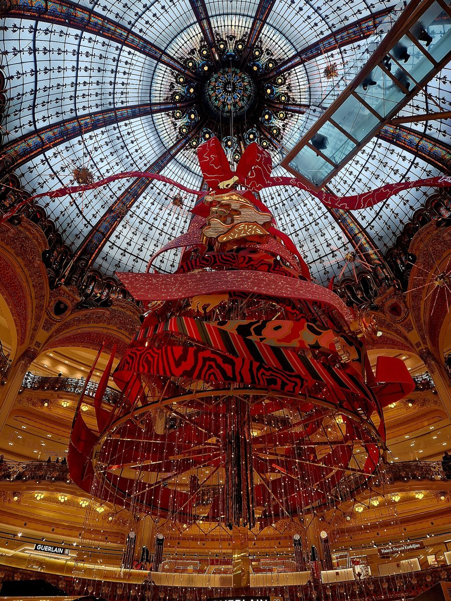
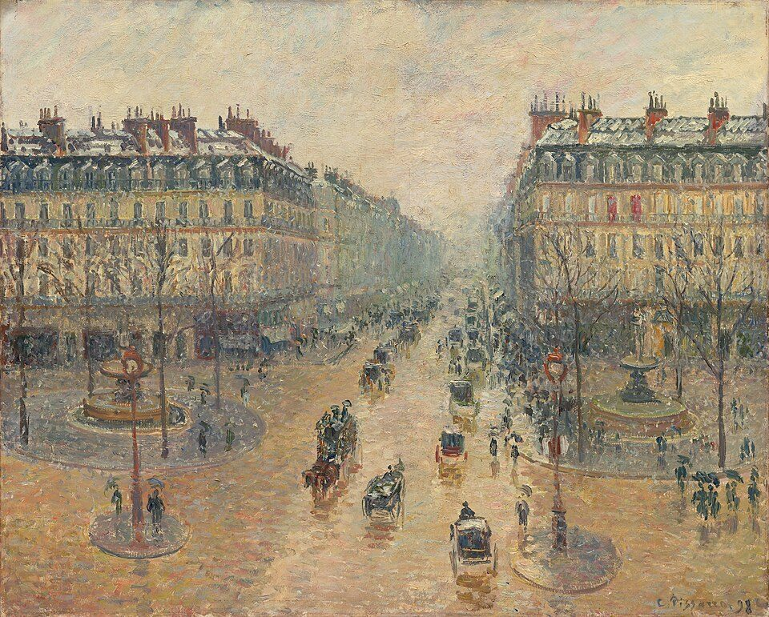
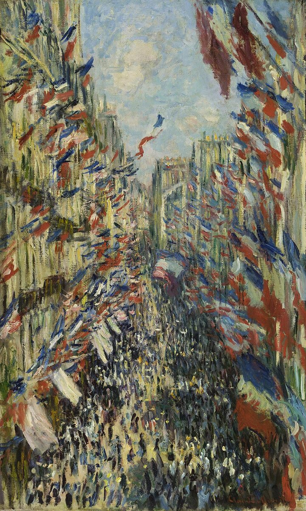

DELF B2 · ENTRAÎNEMENT CIBLÉ
Ne plus refaire les mêmes erreursGérondif · subjonctif ou indicatif · hypothèse · pronomsNever make the same mistakes again · gérondif · subjunctive or indicative · hypotheses · pronouns
Le sapin de Noël sous la coupole des Galeries Lafayette Haussmann, Paris, 2025
Voici un entraînement court, construit à partir de tes erreurs du test : les mêmes difficultés, mais dans des phrases nouvelles.
Here is a short practice session built from your mistakes in the test: the same difficulties, but in new sentences.
Chaque partie commence par un rappel express. Si tu te trompes, la section « À revoir » te renvoie à la bonne règle.
Each part starts with a quick reminder. If you make a mistake, the 'To review' section takes you back to the right rule.
Tout est sauvegardé automatiquement : tu peux fermer la page et la rouvrir avec le même lien, tu retrouveras tes réponses, ton score et ton texte.
Everything is saved automatically: you can close the page and reopen it with the same link, and your answers, score and text will still be there.
À la fin, clique sur « Envoyer à Irène » pour m'envoyer ton score, les points à revoir et ta production écrite.
At the end, click 'Send to Irène' to send me your score, the points to review and your written production.
1
Le gérondif et le participe présent
The gérondif and the present participle

Camille Pissarro, Avenue de l'Opéra, effet de neige, le matin, 1898 · Musée Pouchkine, Moscou
RAPPEL EXPRESS · QUICK REMINDER
tout en + -ant
Opposition : deux actions de la même personne qui se contredisent (= bien que).
Contrast: two actions by the same person that contradict each other (= even though).
-ant seul ou en + -ant ?
Le participe seul se rapporte au nom juste avant ; le gérondif (en + -ant) se rapporte au sujet.
The participle on its own describes the noun just before it; the gérondif (en + -ant) refers to the subject.
ayant / étant + participe passé
Action terminée avant l'action principale. Avec être : étant + participe accordé.
An action completed before the main one. With être verbs: étant + past participle with agreement.
1
EXERCICE · GÉRONDIF OU PARTICIPE ?
Choisis la bonne forme.
Choose the right form.
1
______ la publicité, il travaille dans une grande agence.
Even though he criticises advertising, he works in a big agency.
Tout en critiquant la publicité, il travaille dans une grande agence.
Even though he criticises advertising, he works in a big agency.
2
J'ai aperçu la directrice ______ du musée : elle avait l'air pressée.
I caught sight of the director coming out of the museum: she looked in a hurry.
J'ai aperçu la directrice sortant du musée : elle avait l'air pressée.
I caught sight of the director coming out of the museum: she looked in a hurry.
3
______ la réunion, elle a envoyé le compte rendu à toute l'équipe.
Having finished the meeting, she sent the minutes to the whole team.
Ayant terminé la réunion, elle a envoyé le compte rendu à toute l'équipe.
Having finished the meeting, she sent the minutes to the whole team.
4
______ en retard, nous avons raté le début du concert.
Having arrived late, we missed the beginning of the concert.
Étant arrivés en retard, nous avons raté le début du concert.
Having arrived late, we missed the beginning of the concert.
2
Indicatif ou subjonctif ?
Indicative or subjunctive?

Claude Monet, La Rue Montorgueil, fête du 30 juin 1878 · Musée d'Orsay, Paris
RAPPEL EXPRESS · QUICK REMINDER
+ indicatif : le réel, le certain, le probable
espérer que, il est probable que, être sûr que, croire / penser que, après que.
espérer que, il est probable que, être sûr que, croire / penser que, après que take the indicative.
+ subjonctif : l'envisagé, le souhait, le doute
il faut que, vouloir / souhaiter que, il est possible que, pour que, à condition que, bien que, avant que.
il faut que, vouloir / souhaiter que, il est possible que, pour que, à condition que, bien que, avant que take the subjunctive.
Le piège de la négation
Je crois / je suis sûre qu'il a raison (indicatif) → je ne crois pas / je ne suis pas sûre qu'il ait raison (subjonctif).
Affirmative croire / être sûr → indicative; negative → subjunctive.
après que / avant que
Après que + indicatif (souvent le futur antérieur : après que tu auras signé). Avant que + subjonctif.
Après que + indicative (often the future perfect). Avant que + subjunctive.
Le subjonctif passé
Action déjà réalisée : avoir / être au subjonctif + participe passé : bien qu'elle ait voyagé.
Completed action: avoir / être in the subjunctive + past participle.
Former le subjonctif
On part de ils au présent : ils partent → que je parte… Avec nous et vous, c'est la forme de l'imparfait : que nous partions, que vous partiez.
Start from ils in the present: ils partent → que je parte… With nous and vous it looks like the imperfect: que nous partions, que vous partiez.
2
EXERCICE · INDICATIF OU SUBJONCTIF ?
Choisis la forme correcte.
Choose the correct form.
1
J'espère que la nouvelle campagne ______ un grand succès.
I hope the new campaign will be a great success.
J'espère que la nouvelle campagne aura un grand succès.
I hope the new campaign will be a great success.
2
Il est probable que le client ______ sa décision demain.
The client will probably make his decision tomorrow.
Il est probable que le client prendra sa décision demain.
The client will probably make his decision tomorrow.
3
Il est possible que le tournage ______ reporté.
The shoot may be postponed.
Il est possible que le tournage soit reporté.
The shoot may be postponed.
4
Je suis sûre que tu ______ raison.
I'm sure you're right.
Je suis sûre que tu as raison.
I'm sure you're right.
5
Je ne crois pas que ce slogan ______ assez fort.
I don't think this slogan is strong enough.
Je ne crois pas que ce slogan soit assez fort.
I don't think this slogan is strong enough.
6
Après que tu ______ les visuels, nous les enverrons à l'imprimeur.
Once you have approved the visuals, we'll send them to the printer.
Après que tu auras validé les visuels, nous les enverrons à l'imprimeur.
Once you have approved the visuals, we'll send them to the printer.
7
Je veux bien présenter le projet, à condition que tu ______ avec moi.
I'm happy to present the project, as long as you come with me.
Je veux bien présenter le projet, à condition que tu viennes avec moi.
I'm happy to present the project, as long as you come with me.
8
J'affiche le planning pour que chacun ______ ce qu'il doit faire.
I'm putting up the schedule so that everyone knows what they have to do.
J'affiche le planning pour que chacun sache ce qu'il doit faire.
I'm putting up the schedule so that everyone knows what they have to do.
9
Bien qu'il ______ toute la nuit, il est arrivé en pleine forme.
Although he had worked all night, he arrived in great shape.
Bien qu'il ait travaillé toute la nuit, il est arrivé en pleine forme.
Although he had worked all night, he arrived in great shape.
3
EXERCICE · FORME LE SUBJONCTIF
Conjugue le verbe au subjonctif présent.
Put the verb into the present subjunctive.
sortir
1
Il faut que nous ______ avant 18 heures.
We have to go out before 6 p.m.
Il faut que nous sortions avant 18 heures.
We have to go out before 6 p.m.
prendre
2
Il faut que vous ______ le train de 7 h 10.
You need to take the 7.10 train.
Il faut que vous preniez le train de 7 h 10.
You need to take the 7.10 train.
être
3
Il faudrait que nous ______ d'accord avant lundi.
We ought to be in agreement before Monday.
Il faudrait que nous soyons d'accord avant lundi.
We ought to be in agreement before Monday.
avoir
4
Il faut que tu ______ le temps de relire le brief.
You need to have time to reread the brief.
Il faut que tu aies le temps de relire le brief.
You need to have time to reread the brief.
savoir
5
Il est important que vous ______ exactement ce que veut le client.
It's important that you know exactly what the client wants.
Il est important que vous sachiez exactement ce que veut le client.
It's important that you know exactly what the client wants.
3
L'hypothèse
Expressing hypotheses
Le pont Alexandre III, la nuit, Paris
RAPPEL EXPRESS · QUICK REMINDER
si + présent
→ présent, futur ou impératif. Jamais de futur ni de conditionnel juste après si.
→ present, future or imperative. Never a future or a conditional straight after si.
si + plus-que-parfait → conditionnel présent
Cause dans le passé, conséquence aujourd'hui : si j'avais accepté, je vivrais à Londres maintenant.
Past cause, present result: if I had accepted, I would be living in London now.
si + plus-que-parfait → conditionnel passé
Le regret, l'irréel du passé : si j'avais su, j'aurais pris le train.
Regret, the unreal past: if I had known, I would have taken the train.
au cas où + conditionnel
Toujours le conditionnel : au cas où il pleuvrait.
Always the conditional: in case it rains.
Le gérondif à la place de si
C'est le temps du verbe principal qui donne le sens : en partant plus tôt, tu aurais vu… = si tu étais partie.
The tense of the main verb gives the meaning: en partant plus tôt, tu aurais vu… = if you had left.
4
EXERCICE · L'HYPOTHÈSE
Conjugue le verbe au temps qui convient.
Put the verb into the right tense.
passer
1
Si tu ______ par Montmartre, prends des photos pour moi !
If you go through Montmartre, take some photos for me!
Si tu passes par Montmartre, prends des photos pour moi !
If you go through Montmartre, take some photos for me!
être
2
Si nous avions réservé plus tôt, nous ______ au premier rang ce soir.
If we had booked earlier, we would be in the front row tonight.
Si nous avions réservé plus tôt, nous serions au premier rang ce soir.
If we had booked earlier, we would be in the front row tonight.
éviter
3
Si j'avais lu le brief, j'______ cette erreur.
If I had read the brief, I would have avoided this mistake.
Si j'avais lu le brief, j'aurais évité cette erreur.
If I had read the brief, I would have avoided this mistake.
avoir
4
Au cas où le train ______ du retard, préviens-moi.
In case the train is late, let me know.
Au cas où le train aurait du retard, préviens-moi.
In case the train is late, let me know.
5
EXERCICE · AU CAS OÙ, SI, GÉRONDIF
Choisis la bonne forme.
Choose the right form.
1
Je vous laisse mon numéro au cas où vous ______ des questions.
I'm leaving you my number in case you have any questions.
Je vous laisse mon numéro au cas où vous auriez des questions.
I'm leaving you my number in case you have any questions.
2
______ le métro, tu serais arrivée à l'heure.
If you had taken the metro, you would have arrived on time.
En prenant le métro, tu serais arrivée à l'heure.
If you had taken the metro, you would have arrived on time.
3
Si le client ______ la maquette, nous lancerons l'impression lundi.
If the client approves the mock-up, we'll start printing on Monday.
Si le client valide la maquette, nous lancerons l'impression lundi.
If the client approves the mock-up, we'll start printing on Monday.
4
Les pronoms simples et doubles
Single and double object pronouns
Le marché de Noël de Strasbourg, place Broglie
RAPPEL EXPRESS · QUICK REMINDER
L'ordre devant le verbe
me te se nous vous › le la les › lui leur › y › en
Order before the verb: me te se nous vous › le la les › lui leur › y › en.
y et en
croire à quelque chose → j'y crois. Une quantité → en : il y en a, jamais « il en y a ».
croire à something → j'y crois. A quantity → en: il y en a.
L'impératif
Affirmatif : pronoms après le verbe : parle-m'en, explique-le-moi. Négatif : pronoms devant : ne lui en parle pas.
Affirmative: pronouns after the verb (parle-m'en). Negative: before the verb (ne lui en parle pas).
Le passé composé
Pronoms devant l'auxiliaire, ne … pas autour : je ne leur en ai pas parlé. Accord avec le COD placé avant : je la leur ai envoyée.
Pronouns before the auxiliary, ne … pas around them. Agreement with a preceding direct object: je la leur ai envoyée.
Verbe + infinitif
Pronoms devant l'infinitif : je vais leur en offrir.
Pronouns before the infinitive: je vais leur en offrir.
6
EXERCICE · REMETS LES PRONOMS DANS L'ORDRE
Touche les mots dans le bon ordre. Touche un mot de ta phrase pour l'enlever.
Tap the words in the right order. Tap a word in your sentence to remove it.
1(Ne parle pas de la surprise à tes collègues !) Don't tell them about it!
Ne leur en parle pas !
(Ne parle pas de la surprise à tes collègues !) Don't tell them about it!
2(Le budget ? À Julie ?) I haven't told her about it yet.
Je ne lui en ai pas encore parlé.
(Le budget ? À Julie ?) I haven't told her about it yet.
3(La maquette ? Aux clients ?) I sent it to them yesterday.
Je la leur ai envoyée hier.
(La maquette ? Aux clients ?) I sent it to them yesterday.
4(Des macarons ?) I'm going to bring you some.
Je vais vous en apporter.
(Des macarons ?) I'm going to bring you some.
7
EXERCICE · LE BON PRONOM
Choisis la bonne réponse.
Choose the right answer.
1
Tu crois à cette campagne ? Oui, j'______ crois.
Do you believe in this campaign? Yes, I believe in it.
Tu crois à cette campagne ? Oui, j'y crois.
Do you believe in this campaign? Yes, I believe in it.
2
Il reste des affiches ? Oui, il ______ a encore trois.
Are there any posters left? Yes, there are still three.
Il reste des affiches ? Oui, il y en a encore trois.
Are there any posters left? Yes, there are still three.
3
Ton week-end à Bordeaux ? Raconte-______ !
Your weekend in Bordeaux? Tell me about it!
Ton week-end à Bordeaux ? Raconte-m'en !
Your weekend in Bordeaux? Tell me about it!
4
Les maquettes ? Je les lui ai ______ ce matin.
The mock-ups? I showed them to her this morning.
Les maquettes ? Je les lui ai montrées ce matin.
The mock-ups? I showed them to her this morning.
8
EXERCICE · TRADUCTION
Traduis en français, puis compare avec les deux propositions.
Translate into French, then compare with the two suggested answers.
1I hope the client will like the new visuals, although they are very different.
Proposition 1
J'espère que le client aimera les nouveaux visuels, bien qu'ils soient très différents.
Proposition 2
J'espère que les nouveaux visuels plairont au client, même s'ils sont très différents.
Ta traduction est correcte ?
2If you had told me earlier, I would be in Lyon now.
Proposition 1
Si tu me l'avais dit plus tôt, je serais à Lyon maintenant.
Proposition 2
Si tu m'avais prévenue plus tôt, je serais à Lyon en ce moment.
Ta traduction est correcte ?
3The brochure? I haven't sent it to them yet.
Proposition 1
La brochure ? Je ne la leur ai pas encore envoyée.
Proposition 2
La brochure ? Je ne la leur ai toujours pas envoyée.
Ta traduction est correcte ?
5
Production écrite DELF B2
DELF B2 written production
✎
ESSAI ARGUMENTÉ · 250 MOTS MINIMUM · 1 HEURE
Production écrite · Une pub de Noël sans humains ?
Written production · A Christmas advert without humans?
Le sapin de Noël de la place Vendôme, Paris
Depuis 2024, plusieurs grandes marques confient leur publicité de Noël à l'intelligence artificielle générative. Coca-Cola l'a fait deux années de suite malgré les critiques, et en décembre 2025, McDonald's a retiré aux Pays-Bas un spot de Noël entièrement généré par IA, après une vague de moqueries. Pour les marques, l'IA fait gagner du temps et de l'argent ; une partie du public regrette des images « sans âme » et s'inquiète pour les métiers créatifs.
Since 2024, several major brands have handed their Christmas advertising over to generative artificial intelligence. Coca-Cola did it two years running despite the criticism, and in December 2025 McDonald's withdrew a Christmas advert in the Netherlands that was entirely AI-generated, after a wave of mockery. For brands, AI saves time and money; some of the public miss the 'soul' in the images and worry about creative jobs.
Le magazine en ligne d'une association de professionnels de la communication ouvre un débat : « Une publicité de Noël créée par l'IA peut-elle encore nous faire rêver ? Faut-il l'encadrer ? » Vous écrivez un article dans lequel vous donnez votre point de vue de façon argumentée, en vous appuyant sur des exemples précis. (250 mots minimum)
The online magazine of a communications professionals' association is opening a debate: 'Can a Christmas advert created by AI still make us dream? Should it be regulated?' You write an article giving your point of view in a well-argued way, with precise examples. (250 words minimum)
Pour trouver tes idées · to find your ideas
• Qu'est-ce qui fait l'émotion d'une publicité de Noël : l'histoire, les visages, la musique, le savoir-faire ?
What creates the emotion in a Christmas advert: the story, the faces, the music, the craftsmanship?
• L'IA est-elle seulement un outil, comme l'appareil photo autrefois, ou remplace-t-elle les créatifs ?
Is AI just a tool, like the camera once was, or does it replace creative people?
• Le public a-t-il le droit de savoir qu'une image a été générée par IA ?
Does the public have the right to know that an image was generated by AI?
• Ton expérience d'une campagne de Noël : qu'est-ce qu'une machine ne pourrait pas faire ?
Your own experience of a Christmas campaign: what could a machine not do?
Mots utiles · useful words
Organise ton texte · organise your text
1
Introduction : présente le débat à partir d'un exemple récent.
Introduction: present the debate through a recent example.
Depuis deux ans, les publicités de Noël générées par l'IA…
2
Les arguments en faveur de l'IA (temps, coûts, nouvelles possibilités).
The arguments in favour of AI (time, cost, new possibilities).
Certes, il est probable que l'IA permettra…
3
Les limites : l'émotion, les métiers, la transparence.
The limits: emotion, jobs, transparency.
Pourtant, je ne crois pas qu'une machine puisse…
4
Ta proposition et ta conclusion.
Your proposal and your conclusion.
À condition que les marques soient transparentes, …
Défi : emploie au moins une fois espérer que, bien que, au cas où, un gérondif et un double pronom.
Challenge: use espérer que, bien que, au cas où, a gérondif and a double pronoun at least once each.
0 mots · words✓ Enregistré automatiquement · saved automatically
Ton texte sera envoyé à Irène avec tes résultats, grâce au bouton tout en bas de la page.
Your text will be sent to Irène with your results, using the button at the very bottom of the page.
À revoir · to review
Chaque erreur renvoie à la règle. · Each mistake links back to the rule.
📩 Envoyer mes résultats à Irène
Irène reçoit ton score, les points à revoir et ta production écrite.
Irène receives your score, the points to review and your written production.
💾 Ta progression est sauvegardée · your progress is saved
Tout est enregistré automatiquement dans ce document : tes réponses, ton score, tes traductions et ton texte. Tu peux fermer la page et la rouvrir avec le même lien quand tu veux. Pour continuer sur un autre appareil, crée un lien de reprise et ouvre-le là-bas.
Everything is saved automatically in this document: your answers, your score, your translations and your text. You can close the page and reopen it with the same link whenever you like. To carry on on another device, create a resume link and open it there.